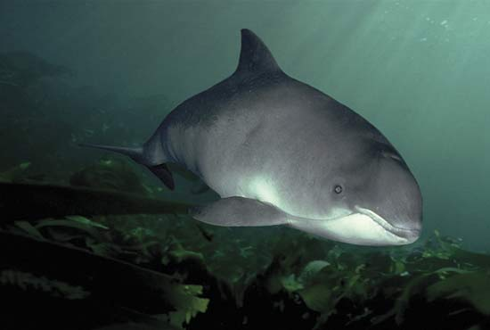
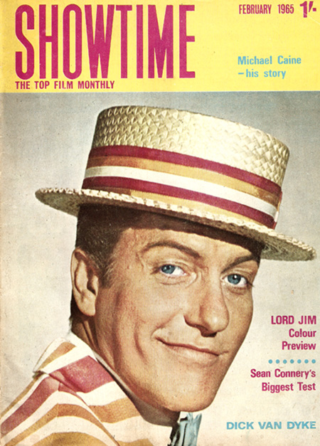

Friday, July the 29th, 2011
back to: title, date or indexes
This week in The Dabbler I provide a unique insight into my working methods, casting a frank and unstinting* gaze upon the creative process involved in the writing of the masterpiece that is Porpoises Rescue Dick Van Dyke. Mention of which reminds me that, several days after publication, there may be one or two readers in far-flung corners of the earth who have not yet bought copies. You know who you are. Zip thyselves o'er to Lulu and make purchase now, tardy ones!
* NOTE : “Unstinting”, in this context, means “not involving at any stage the participation of a stint”. As any fule kno, a stint is a type of bird, specifically a very small wader known in North America as a peep. They can be difficult to identify because of the similarity between species, and various breeding, non-breeding, juvenile and moulting plumages, but you shouldn't let that stop you.

